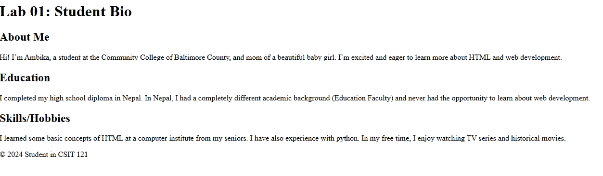
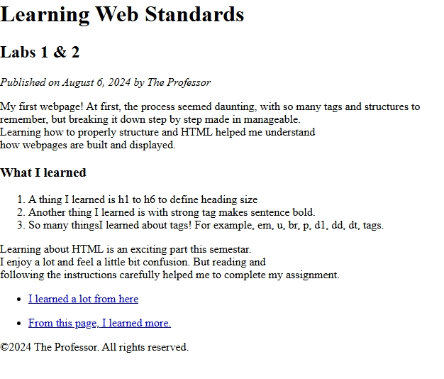
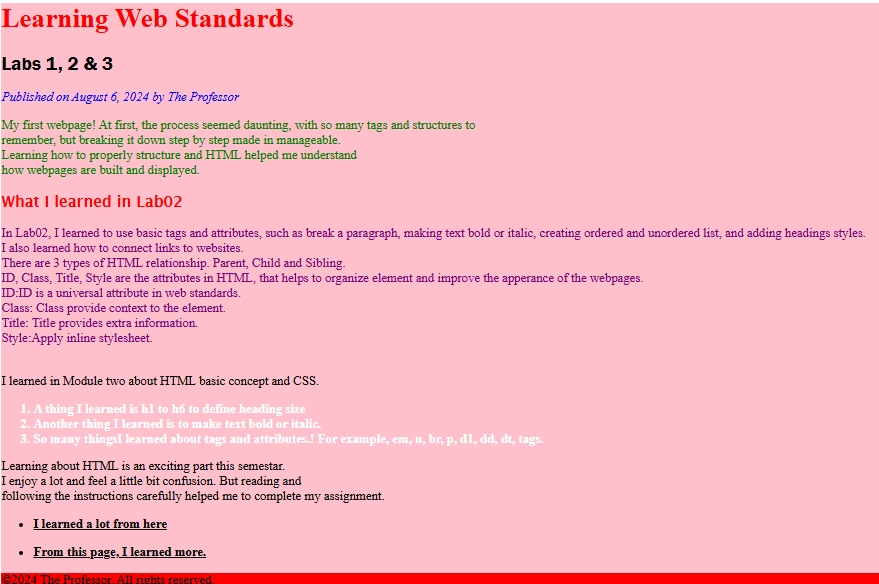
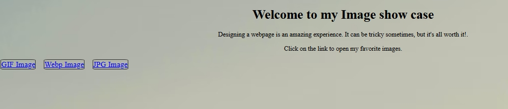
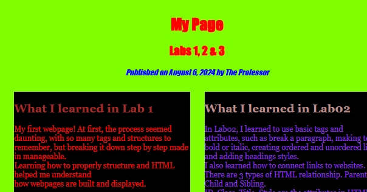
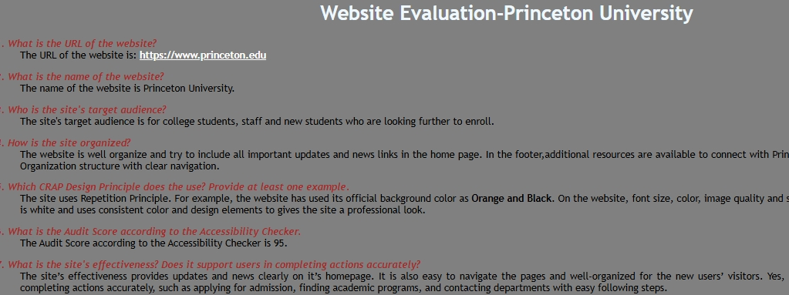
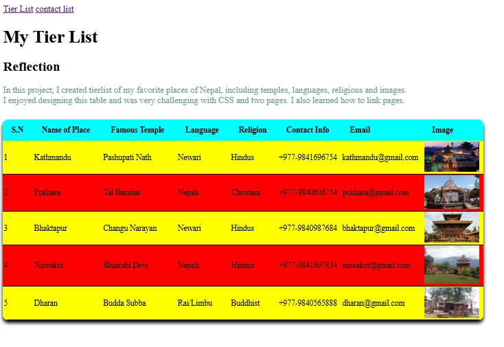
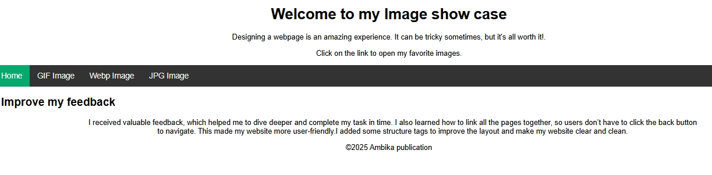
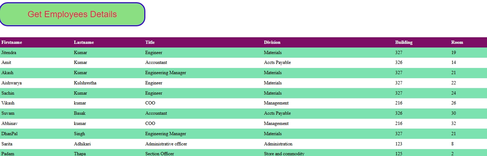
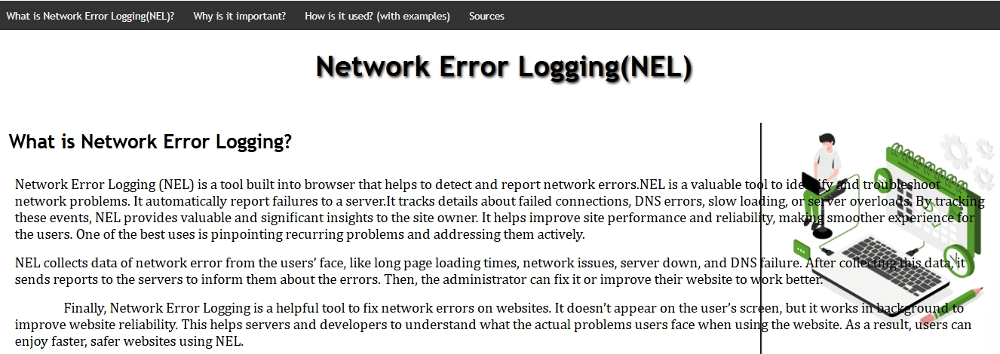

Project and Lab works:
-
Lab 1: Student Bio:
View LabIn Lab 01, I created a basic webpage using only HTML to introduce myself.
 -
Lab 2: Learning Web Standards(lab1 and lab2) reflection
View Lab - Applied color, layout, and text styling.  -
Lab 3: Learning Web Standards (lab1, lab2 and lab3) reflection
View LabCSS styling  -
Lab 4: Image showcases
View LabVisual & Media Elements.  -
Lab 5: My Page (Labs work)
View Lab Used HTML and CSS to create a desktop and mobile-friendly design  -
Lab 6: Visual Media Lab
View LabEvulate the favorite website and describe the design of website  -
Lab 7: VisuaMedia Lab
View LabDisplay a tier list of my favorite places in Nepal.  -
Lab 8: Visual Media Lab
View LabSimple use of JavaScript and a responsive navigation menu  -
Lab 9: Visual Media Lab
View LabDisplays employee details using XML and JavaScript in a table format  -
Lab 10: Visual Media Lab
View LabStandard Presentation 